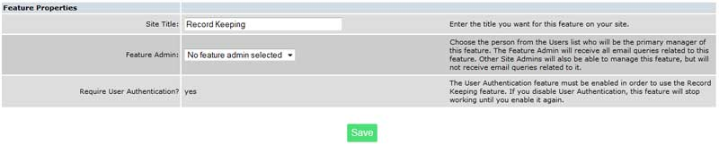
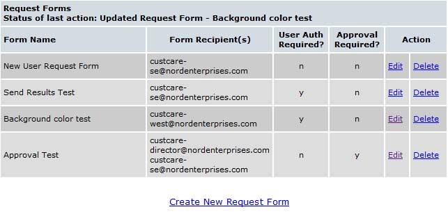
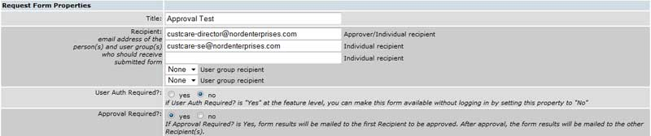
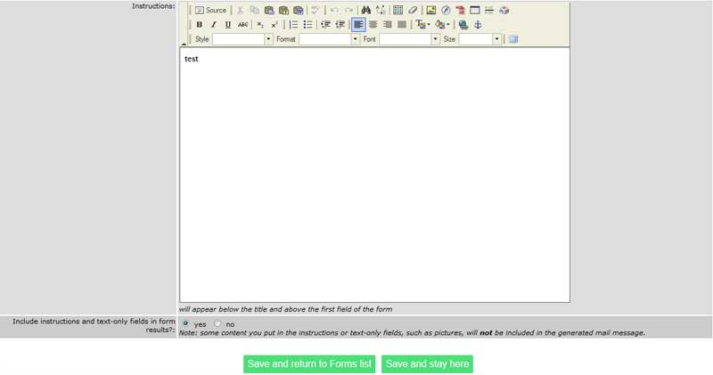
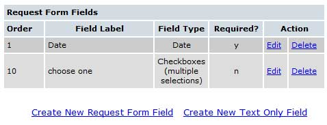
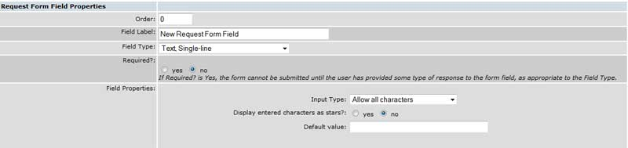
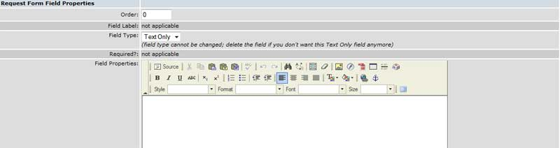
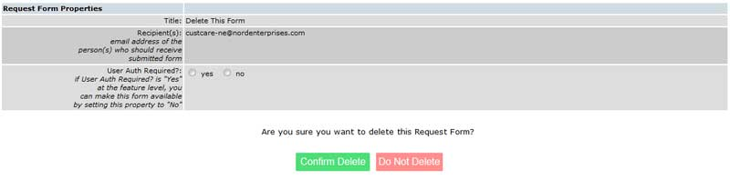
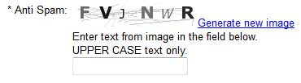

Working with Request Forms: {{rfpanel.msg}}
This feature allows you to design electronic forms that your site visitors can use to send you information, requests, questions, or simple yes/no responses. We suggest that you design your form on paper before you begin the electronic design. That will help you determine the most effective sequence of fields and the types of instructional text you will need to include to make filling out the form understandable to your visitor.
Like other Features, you can create a button or embedded link that goes to the Feature itself, which will display a list of all available forms, or one that goes directly to a specific form.
Select “Features” from the Admin Panel (button) and then locate the Request Forms feature. If you select “Edit,” you will see a screen similar to the one below.
Site Title: If you prefer to name the forms something other than “Request Forms” you can change the name in the “Site Title” field.
Require User Authentication: Set this to “yes” if you want to require your site visitors to log in before they can access the form. Since you can set the authentication requirements
When you select “Manage” from the feature screen next to the “Request Forms” feature, you will see a screen similar to the one below.
To create a new form select the “Create New Request Form” link and a screen like the one shown below will be displayed.
Title: Enter a short title for the form, like “Inquiry Form.”
Recipient: Enter the email address of the recipient of the form. You can enter up to three email address if you want more than one person to receive the form.
Group Recipients: In addition to the individual email addresses entered in the “Recipient” field, you can also define up to two User Groups as recipients – distribution lists. (See the User Group guide for detail instructions on setting up User Groups.) If “Approval Required?” is “yes”, the form must be approved by the first recipient before it will be sent to recipients #2, #3, and/or the User Groups.
Approval Required: Set this to “Yes” if only the fit email address will be used and that person will have to indicate approval before the form is sent on to the next email address(es).
Instructions: This area is used to include your comments or instructions for completing the form. Entering text in the instruction area is just like entering it into Page Areas on your web pages. The full power of the page area editor is available to you to use in this field, including the image and linking ability. You can, as an example, include a link to an email address, a link to another page on the site, a link to a feature on your site, or a link to an external site. For a detailed explanation of the page area editor, please see the “Pages” guide.
Include Instructions…: If you would like the instructions included on the email message that is generated, select “yes.”
Once you are satisfied with this section, select “Save and stay here”. You are now ready to begin adding fields to your form. To do that, click the "field types" tag at left.
Select “Create New Request Form Field” and you will see a screen like the one shown below.
There are a couple example fields in the image above- on a new form, it will be blank until you click the 'Create New Request Form Field' link. When you do, you'll see a screen similar to this one
Order: Enter a sequence number for the field you are defining. You can begin with a “0” or a “1” and they do not have to be sequential. You can change this value later, but that may require changing the values of all the fields you have defined after the one you want to change. It is easier to number the fields on your paper designed form and follow that sequence.
Field Label: This is the “prompt” that your visitor will see. Keep it short, like “Name,” “Your Name,” ”Address,” “Email Address,” etc. Don’t add a colon (:) after the label, the system will do that automatically.
A note on labels: If the form requires a logon, the system will look-up some of the information automatically when you include specific labels: “Name” (will look up the user name), “Home” (will look up the address), “Phone” (will look up the phone number), and “Email” (will look up the email address).
Field Type: Next, define the type of field by selecting it from the drop down menu:
- Single Line Text (e.g. a Name or Email address)
- Multi Line Text (e.g. comments, questions, etc.). Multi-line text fields allow your users to enter long responses, like “comments.” They also provide an option of formatting the text in the box.
- Date (complete with the standard pop-up date picker)
- A Yes/No Prompt
- Select List (up to 20 choices from a drop down menu)
- Radio Button (up to 20 choices with only one choice allowed)
- Check Box (up to 20 choices, all selectable)
- Timestamp - this is a "hidden" field. Your visitor does not see it, but in the resulting email, the field appears with the label you specify as yyyymmddhhmmss - date and time (Eastern Time) of the form submission.
- Send copy of results to self - This field causes a checkbox to appear on the form with the caption "check here to have a copy of the form results sent to the email address entered above." It must immediately follow a field with the exact label 'Email' and be defined as a 'Text, Single-line'.
- Image validation code. This field type generates an image with random letters that a user must match to submit the form. This can be helpful if you are experiencing spammers attempting to use your unsecured forms. See the Anti-Spam tag at left for more information.
- Attach File - This allows a site user to attach an image or document to their form submission.
Note: You can only allow 3 attachments per form.
Required: Setting this value to “yes” forces your visitor to enter something in the field. You would want to require a name or, perhaps, an email address, but many of the fields won’t be required. If a field is set as "required", an asterisk will appear next to it to notify site users that it must be filled out before the form can be submitted.
Field Properties: This field allows you define the type of input your visitor must make in a field. Normally, you will just leave the default values.
When you have finished defining the field, select the “Save and return to Form” button at the bottom of the screen.
There is one other field type available, a text-only field that allows you to include miscellaneous text throughout the form. You might want to use this field type to include specific instructions for a field – or a “thank you” comment at the end of the form. To include this field type, select “Create New Text Only Field” from the Request Forms Field area. You will see a screen like the one shown below.
Text fields use the same formatting tools as Page Areas. You can format the text, include pictures, and add embedded links using the page area editor. For more information on the page area editor, please see the "Pages" guide.
Deleting a request form is very simple. On the main manage screen for the request forms feature, you'll see a blue "delete" link for each form you've created. Click that link and you'll see a screen similar to the one below
Click "Confirm Delete" to delete the form from your site. Click "Do Not Delete" to cancel the deletion. Note that deleting the form will not automatically delete any menu item or text link you may have created leading to it, so be sure to do that as well.
Unfortunately, a growing number of spammers are employing automatic “spam bots” or robot software that searches the web for any available means of sending an email. Unsecured forms are a very common target.
The “Image validation field” option uses “Captcha,” a program that can tell whether its user is a human or a computer and used to prevent abuse from these bots. Computer programs can’t read distorted text as well as humans can, so bots cannot navigate sites protected by CAPTCHAs. An estimated 60 million CAPTCHAs are solved by humans around the world every day.
The term CAPTCHA (Completely Automated Turing Test To Tell Computers and Humans Apart) was coined in 2000 by Luis von Ahn, Manuel Blum, Nicholas Hopper and John Langford of Carnegie Mellon University. At the time, they developed the first CAPTCHA to be used by Yahoo.
An example of a generated form field is below. Please note: all responses are in upper case.
Although the system will allow it, we strongly discourage the use of the Image validation field option on forms designed for use on password protected pages or forms that have been secured. These pages and forms are not accessible to the automated robots that this field is designed to protect against.